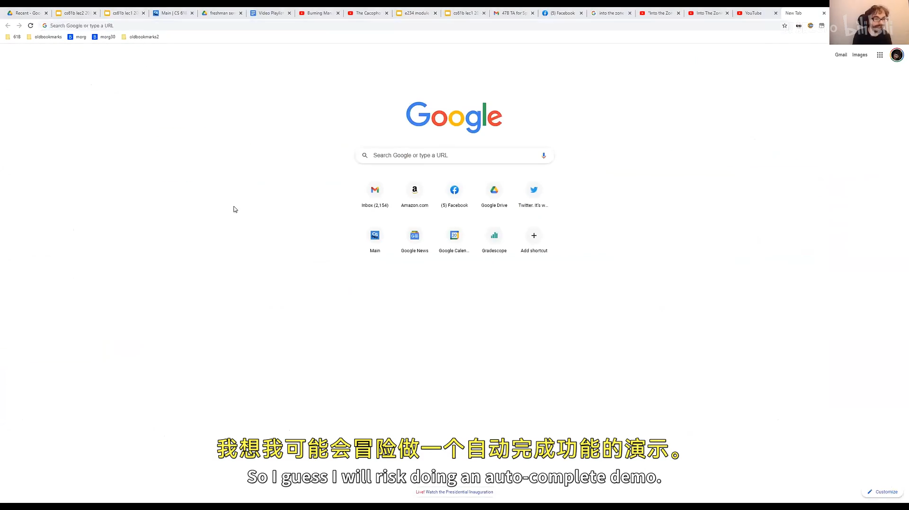
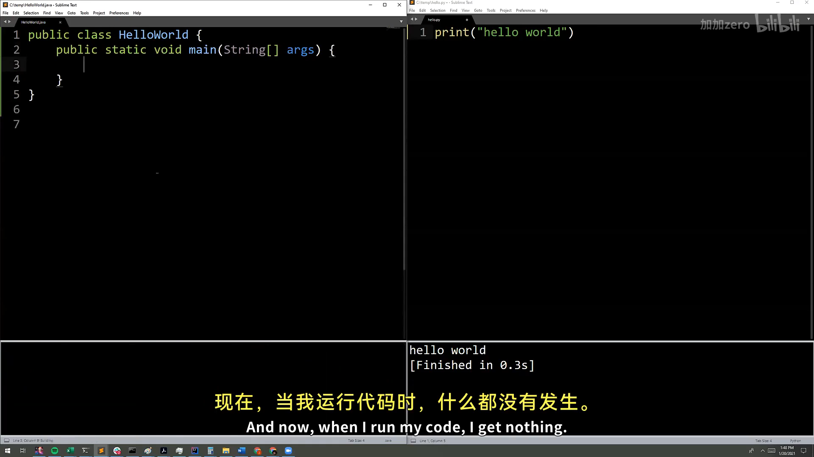
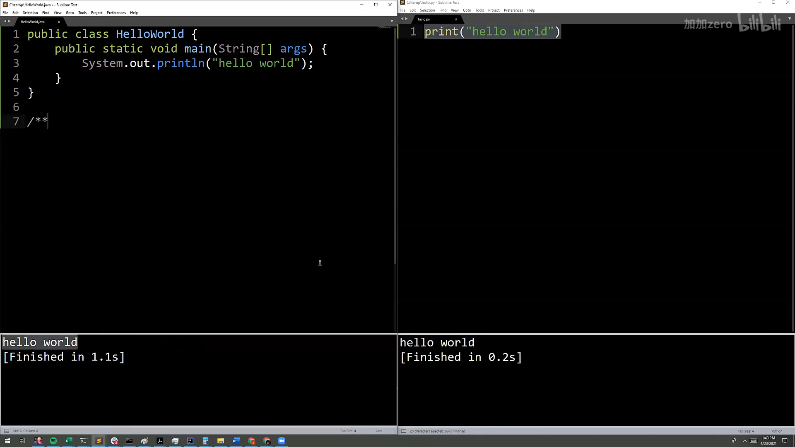
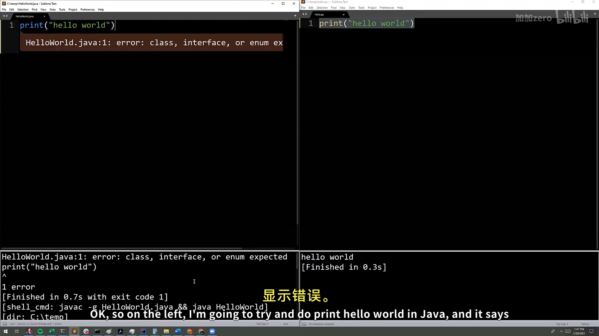
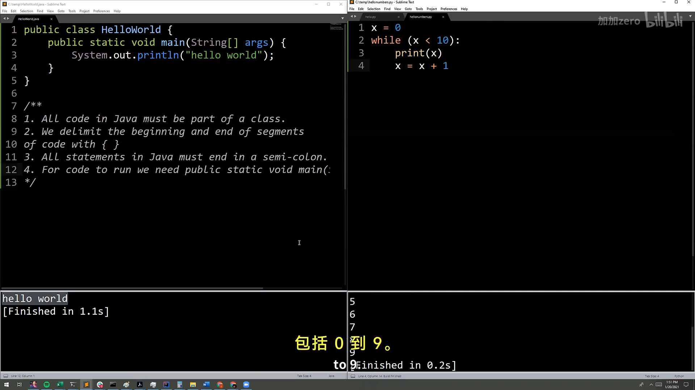
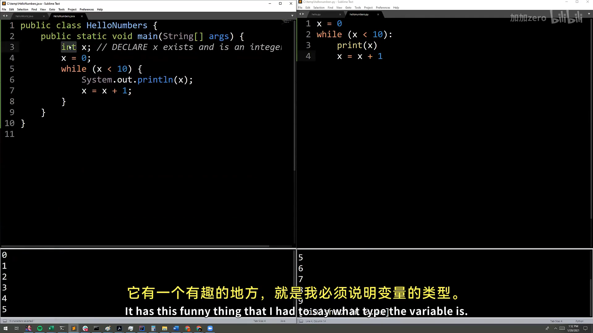
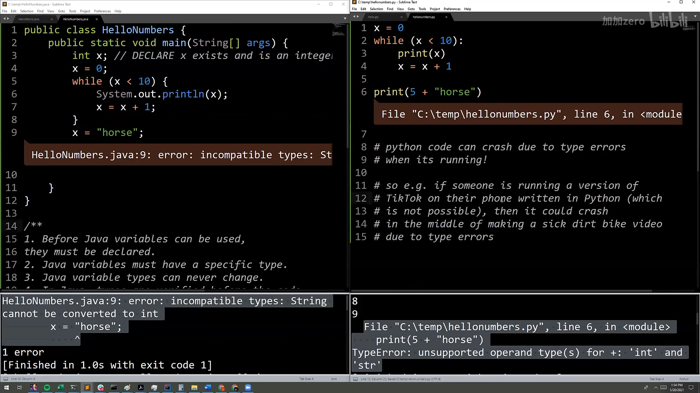

CS61B 第 1 讲：课程介绍与 Hello World（Intro, Hello World Java）
本电子书信息 - 来源视频：【数据结构与算法 CS61B 2021】伯克利大学—中英字幕 p0 1_Intro, Hello World Java - 课程讲义：Hug61B · 1.1 Essentials - 讲义版权：本课程全部材料由 Josh Hug（UC Berkeley CS61B）以 Creative Commons 4.0 BY-NC-SA 许可发布——可自由分享、演绎，但须署名 Josh Hug、以相同许可共享，且不得商用。 - 本书由课堂录像字幕重构而成，术语以官方讲义为准；示意图为官方讲义原图，演示截图取自原视频。
这是 CS61B 的第一讲。前半部分是课程介绍（为什么学这门课、课程怎么组织），后半部分是 Java 入门：Hello World、编译运行、变量与循环、静态类型，以及"函数"在 Java 里的形态。
一、课程介绍：数据结构与算法为何重要
这门课假定你已经会编程，目标不是教你 Java 语法，而是让你写得更快、更省空间、也更容易维护。具体来说，课程覆盖设计、构建、测试和调试大型程序，并顺带学习 git、IntelliJ、JUnit 等真实工具。
为什么要学数据结构与算法？Josh 举了几个例子：
- Google 自动补全：你在搜索框里打字，它能瞬间给出建议，背后依赖的是一种叫 trie（字典树） 的数据结构——本课后面会讲到。
- AlphaGo / 围棋、国际象棋 AI：击败人类的算法，正是本课程为机器学习打下的基础。
- GPT-3：能根据一句话生成代码，这背后同样是算法与数据结构的支撑。

📷 Google 自动补全与背后的数据结构
回到原视频 (00:07:54)
一句话：这门课是求职面试（哈希表、二叉搜索树、堆……）与后续机器学习/系统课程的地基。
二、Hello World：第一个 Java 程序
第一个 Java 程序长这样：
public class HelloWorld {
public static void main(String[] args) {
System.out.println("Hello world!");
}
}
对从 Python 过来的人来说，这显得无比啰嗦，但每个词都有它的理由。几个关键语法特征：
- 程序由一个类声明组成，用
public class声明——Java 里所有代码都活在类里； - 实际运行的代码在一个叫
main的方法里，声明为public static void main(String[] args)； - 用花括号
{ }表示一段代码的开始与结束； - 每条语句必须以分号结尾。

📷 Hello World 程序（Java 与 Python 对比）
回到原视频 (00:43:25)
关于 Java 的几个观察
- 所有代码必须在类里——这是为大型软件工程做的设计取舍；
- 用花括号界定代码段；
- 所有语句以分号结束；
- 要运行代码，得有一个
main方法（现在还不必深究它是什么，第二讲会讲）。

📷 关于 Java 的几个观察
回到原视频 (00:44:22)
三、编译与运行：javac 与 java
运行一个 Java 程序要走两个程序：先编译器 javac，再解释器 java。
$ javac HelloWorld.java # 编译，生成 HelloWorld.class
$ java HelloWorld # 解释执行
Hello World!
- 编译时写
.java，解释时不写.class（"就是这样"）； javac之后看起来"什么都没发生"，但目录里多了一个HelloWorld.class——那是 Java 字节码，只有 Java 解释器才看得懂。

📷 编译与运行流程
回到原视频 (00:42:27)
四、变量与循环：HelloNumbers
下面这个程序打印 0 到 9：
public class HelloNumbers {
public static void main(String[] args) {
int x = 0;
while (x < 10) {
System.out.print(x + " ");
x = x + 1;
}
}
}
几个值得注意的点：
- 变量
x必须先声明、并给定类型，才能使用； - 循环体包在花括号里，判断条件包在圆括号里；
System.out.print（不带ln）不换行；x + " "里的+是字符串拼接，用来给数字之间加空格。
如果你在 Java 里直接写 x = 0 而不先声明 int x，会得到一个神秘的报错 "cannot find symbol"——因为 Java 不允许你说"某物等于某物"，它必须先知道这个"某物"存在、且是什么类型。

📷 变量与循环：HelloNumbers
回到原视频 (00:45:44)
五、静态类型（Static Typing）
Java 最重要的特性之一：所有变量和表达式都有一个静态类型，变量只能存该类型的值，而且类型永远不能变。
int x = 0;
x = "horse"; // 编译错误：String 不能转换为 int
编译器在程序运行之前就拒绝这段代码。这意味着：
- 更容易调试——类型不兼容在编译期就被揪出来；
- 用户永远不会遇到类型错误——比如 Android App 只发布编译后的
.class文件，类型错误早已被编译器拦下； - 代码更好读懂——每个变量、参数、函数都有声明类型，一眼就知道它是什么。
对比 Python 这类动态类型语言：类型错误要等到运行时才暴露。Josh 把 Python 比作"徒手攀岩"——快，但危险；Java 则是"系着绳索、戴着头盔"。

📷 静态类型：x = "horse" 编译报错
回到原视频 (00:46:42)
思考题：
System.out.println(5 + "10")打印的是510还是15？——+遇到字符串就是拼接，所以是510；而5 + 10才是整数加法15。
六、函数与方法（Functions & Methods）
Python 里函数可以在任何地方声明：
def larger(x, y):
if x > y:
return x
return y
print(larger(8, 10))
Java 里，所有代码都在类里，所以"函数"必须属于某个类——类里的函数通常叫方法（method）。等价写法：
public class LargerDemo {
public static int larger(int x, int y) {
if (x > y) {
return x;
}
return y;
}
public static void main(String[] args) {
System.out.println(larger(8, 10));
}
}
新语法是 public static（粗略对应 Python 的 def）。和变量一样，每个参数都要声明类型，函数本身也要声明返回类型（int）。

📷 函数与方法：Python vs Java
回到原视频 (00:49:11)
这些啰嗦的语法看着像"拖慢速度"，但它们是现在还不懂的安全装备：写小程序时显得多余，写大程序时你会感激它们。
附：官方参考与延伸阅读
- 本讲讲义（1.1 Essentials）：https://joshhug.gitbooks.io/hug61b/content/chap1/chap11.html
- Java 参考（免费电子书）：Paul Hilfinger《A Java Reference》
- Head First Java：Kathy Sierra & Bert Bates
- 各语言的 Hello World：https://www.rosettacode.org/wiki/Hello_world/Text
- Java 字节码：https://en.wikipedia.org/wiki/Java_bytecode
- 代码风格指南（课程官方）：https://sp19.datastructur.es/materials/guides/style-guide.html
版权与许可：本电子书中的课堂讲解内容重构自 Josh Hug（UC Berkeley）CS61B 课程录像；课程全部材料依据 Creative Commons 4.0 BY-NC-SA 许可发布。请在使用时署名 Josh Hug、以相同许可共享，且不得用于商业用途。书中示意图来自官方讲义原图，演示截图来自原视频，相应权利归原作者与视频权利人所有。